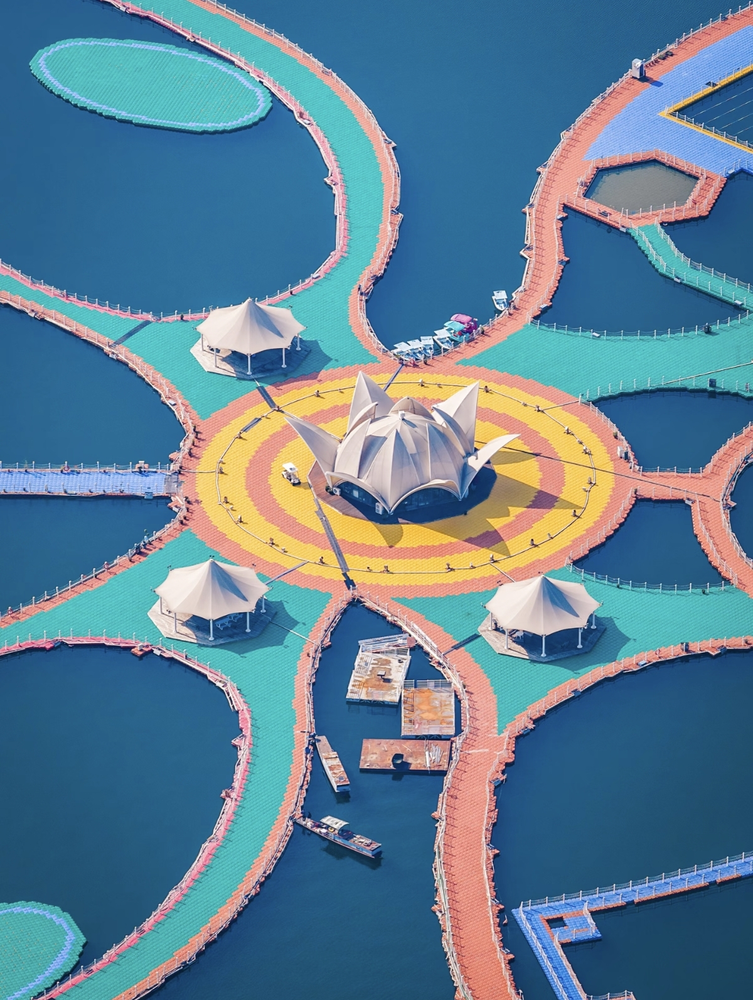
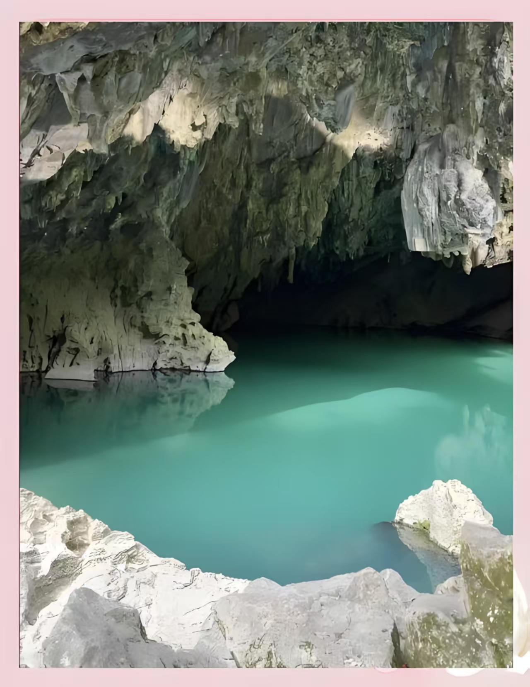
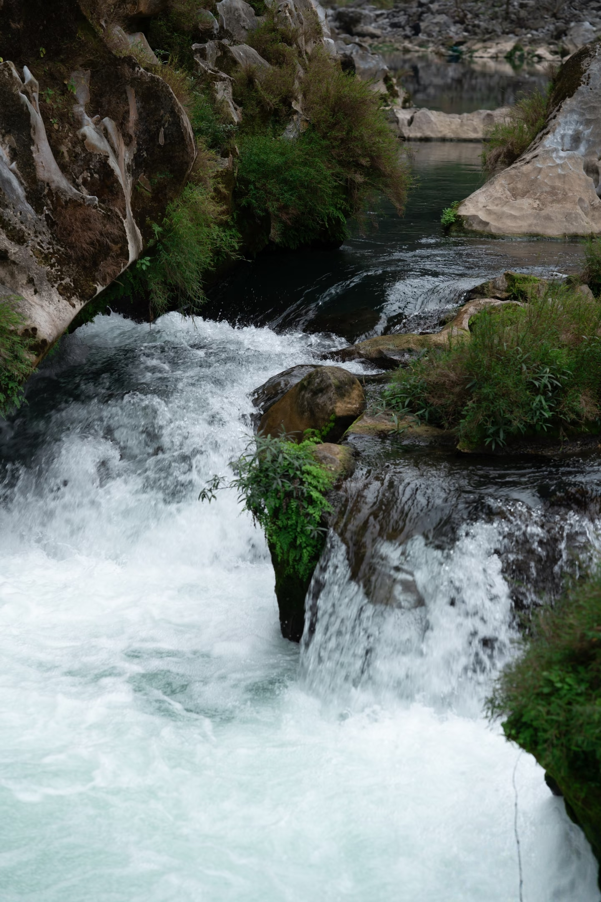
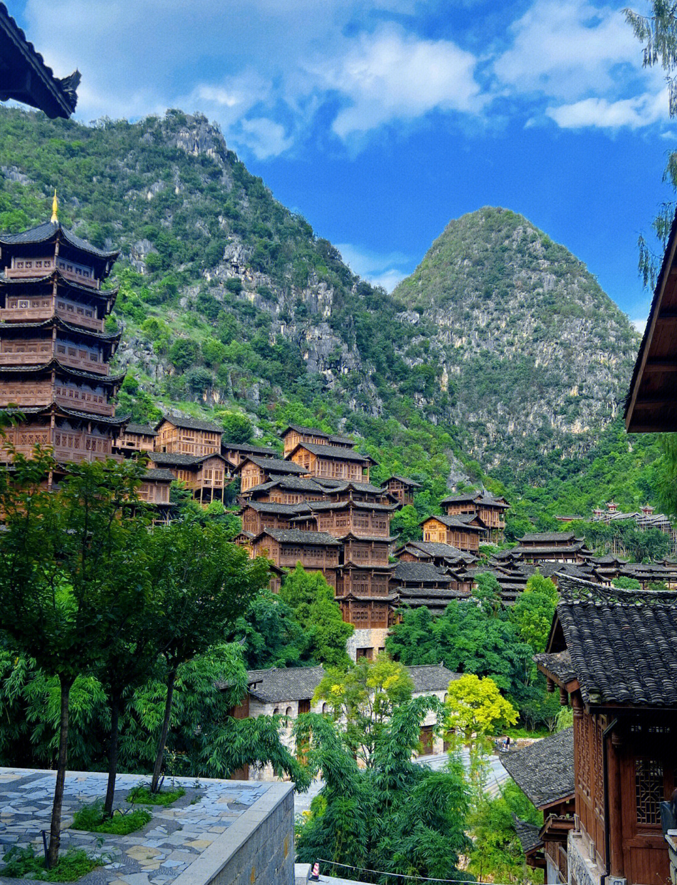

湖城新家园 · 长寿康养地
罗甸县位于贵州南部，素有“天然温室、长寿之乡”的美誉，境内山水秀丽、气候温润， 高原湖泊、溶洞奇观、布依村寨交相辉映，是集康养、休闲、观光于一体的黔南南部旅游胜地。
随着易地扶贫搬迁政策实施，众多群众搬出大山住进新居，山水风光与民生新貌相融共生， 绘就了一幅生态优美、百姓安居、产业兴旺的幸福新画卷。

高原明珠，碧波万顷，岛屿星罗棋布，可乘船游湖、垂钓观光，尽显南国水乡的壮阔与灵秀。

被誉为“东方洞穴博物馆”，青山碧水、溶洞成群，布依风情浓郁，是原生态休闲度假秘境。

位于罗自县板庚乡，距县城约20公里，未开发天然景点。有独特的峡谷、清潭、天然沙滩、漯布景观是露营溯溪胜地。

布依族世代聚居，吊脚楼、梯田、民俗文化保存完好，展现浓郁的少数民族原生态风情。